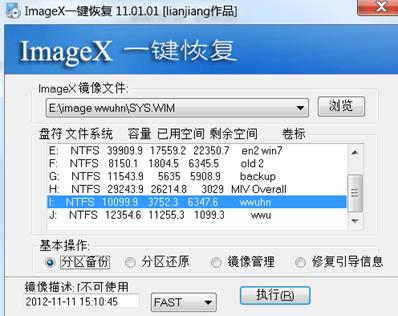
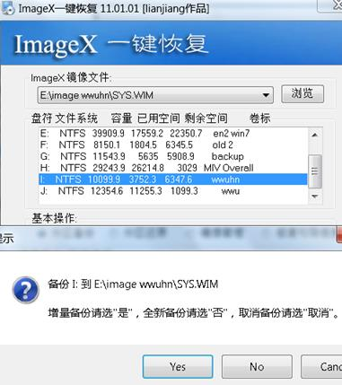

- 复制和粘贴
- 字体（Fonts文件夹）；
- 输入法状态信息（IME文件夹）
- 驱动（通过属性查看其位置）
- 软件自身的功能界面
- QQ消息管理器
- Excel的保存选项
- 导入导出功能：reg,IE的收藏夹和cookie;
- 工具
- 软件自身的工具：工具－－－选项同：word的保留备份功能，MSN；
- 同一软件包的工具:MS2003用户设置保存向导
- 操作系统集成在附件中的系统工具
- 转换向导
- 备份向导
- 系统还原
- 第三方工具:备份BIOS，驱动，reg等
| 评测项目 | 1、腾龙备份大师 2004 黄金企业版 v6.4 Build 80 | 2、Acronis True Image v8.0 Build 786 | 3、Norton Ghost v9.0.0 |
|---|---|---|---|
| 对一些计算机用户而言，硬盘中存储的数据才是最为宝贵的资源，其无形价值甚至高于电脑本身。与其在数据丢失时费时费力找人恢复，不如事先将重要数据备份出来以备后患。下面就向大家介绍几款数据备份软件。 | |||
| 测试平台 | |||
| CPU：P4 1.8GA | |||
| 主板：Intel原厂845G | |||
| 内存：Kingston 256MBDDR | |||
| 硬盘：酷鱼Ⅳ 80G | |||
| 操作系统：Microsoft Windows XP Professional | |||
| 一、易用性 | 这三款参评软件均采用了向导式的操作方式，用户只需亦步亦趋地按需设置即可，显得非常规范化。Acronis True Image作为其中唯一英文界面的软件，其易用性无疑会打些折扣。从外观界面而言，“腾龙备份大师”最显时尚化，而Acronis True Image与Norton Ghost的界面布局则略显雷同，设计较为简洁、传统。 | ||
| 二、备份速度:启用压缩(182MB) | 0:01:27 | 0:00:58 | 0:00:47 |
| 正常压缩 | 0:02:25 | 0:00:51 | 0:00:47 |
| 三、备份介质支持 | 程序支持本地及网络硬盘、移 动存储设备及磁带机（特殊版本）等Windows可以识别的驱动器 | 除了常规的各种存储设备之外，还支持硬盘对硬盘的克隆。 | 支持的备份介质与Acronis True Image近乎一致。 |
| 四、还原速度(压缩目标) | 0:01:37 | 0:00:21 | 0:00:33 |
| 五、实时监控备份数据 | 实时监控备份目标（包括网络监控）的变化，进而及时更新数据 | 不支持实时监控 | 不支持实时监控 |
| 六、检测映像文件 | 利用程序的项目检测系统，能够检测出备份项目的原始文件或目录丢失。 | 用户可选择在还原前自动检测备份文件或是随时通过程序命令进行检测。 | 用户在执行还原操作时，其默认设置为验证镜像文件，以检测是否有文件丢失或错误。 |
| 七、压缩备份文件 | 程序支持快速、默认、最大三种压缩方式。 | 程序支持不压缩、正常压缩、高度压缩及最大压缩率四种方式。 | 程序支持不支持、标准、中、高四种压缩模式。 |
| 182MB正常压缩方式下压缩率 | 43.3 MB | 43.3 MB | 43.3 MB |
| 八、映像文件保护 | 如果选择备份类型为自动锁定，可配合杀毒软件与防火墙等安全防护工具为数据提供全方位的保护。 | 可为镜像文件设置密码保护。 | 虽然程序同时支持为备份文件设置密码，但其选项设置为较为隐蔽，初使用者不易于看到。 |
| 九、高级备份方式 | 支持增量备份及差分备份。 | 不支持此类备份方式。 | 支持增量备份。 |
| 十、切分备份文件 | 不支持此项功能。 | 在备份时，用户可自行选择镜像文件大小，支持由系统根 height="82"据目标空间的大小自动进行分割或直接选择“1.39-3.5’’Floppy”软盘、“100 MB—ZIP-100 Disk Drive”、650 BM/700 BM的刻录光盘分割镜像文件等容量。 | 在驱动器备份向导中，用户可根据程序预设的文件大小选择切分备份镜像。 |
| 十一、计划任务 | 在计划数据备份方案中，用户可选择分钟、小时、每周、季度、月份及年度的备份方案。 | 用户可选择在每日、每周、每月、指定时间点、计算机启动、计算机关闭或一天N次等情况下有计划地执行数据备份操作。 | 用户可选择在指定时间点创建备份或每周、每月执行备份任务。 |
| 总结 | 这三款数据备份软件各具特色，“腾龙备份大师”虽名气不敌其它两款软件，但在某些方面的确具有一定的优势。但是，在硬碰硬的数据备份速度的较量中，其劣势明显。而且在还原数据时，偶尔还会出现错误令程序假死。看来该软件在自身性能上还有待提高。 而Acronis True Image与Norton Ghost相比差异不大，Norton Ghost只是略占些优势而已。对于很多国内用户而言，从界面友好性及操作效率等方面考虑，还是使用Norton Ghost更为稳妥。 |
||
1 进行全新备份和增量备份；2 用wimMount进行文件的查看及其它操作； |
|
| 1.1 使用wintool进行备份 | |
|
|
| 1.2 利用ImageX全新备份wwuh分区： | |
 |
|
| 1.3利用ImageX增量备份：镜像文件选择之前备份好的镜像文件； | |
 |
|
2 用WinMout查看备份的wim文件：下面的1代表第一次备份好的分区文件；2 代表第二次增量备份的文件（也是全部） |
|
|


正常差异增量备份
1.正常备份用于复制所有选定的文件，并且在备份后标记每个文件（换言之，清除存档属性）。也就是说，正常备份是复制所有要备份的文件，并且在备份后清除所有文档的“存档”属性，这样在下次备份时，软件会认为这些文件都还没有被备份。
2.增量备份则是另一种形式，它仅备份自上次正常或增量备份以来创建或更改的文件，并且将这些文件标记为已经备份。举例来说，当你第一次进行正常备份后，所有文档的“存档”属性被清除，而在你新建或修改这些文件后，文件重新被加上“存档”属性，增量备份就是备份这些文件，并且在备份后将这些文件的“存档”属性清除，以保证下次不再备份这些文件。
3.差异备份用于复制自上次正常或增量备份以来所创建或更改的文件。它不将文件标记为已经备份（换句话说，没有清除存档属性）。这就是说，正常或增量备份去掉了文件的“存档”属性，在新文件创建或旧文件被修改后，文件重新被加上了“存档”属性，差异备份就是备份这类文件。在备份完毕后，差异备份并不会清除这类文件的“存档”属性，这样的话，在下次运行差异备份的时候，只要在此期间上次差异备份的文件没有被更改，则它们还会包含在备份集中，将被再次备份。
上面就是我对这几种备份方式的理解，它们各有各的优势，正常备份和差异备份恢复容易，增量备份则占用空间小和花费时间短。
备份类型
“备份”工具支持五种方法备份计算机或网络上的数据。
副本备份(Copy backup)
副本备份可以复制所有选定的文件，但不将这些文件标记为已经备份（换言之，不清除存档属性）。如果要在正常和增量备份之间备份文件，复制是很有用的，因为它不影响其他备份操作。
每日备份
每日备份用于复制执行每日备份的当天修改过的所有选定文件。备份的文件将不会标记为已经备份（换言之，不清除存档属性）。
差异备份(Differential)
差异备份用于复制自上次正常或增量备份以来所创建或更改的文件。它不将文件标记为已经备份（换言之，不清除存档属性）。如果您要执行正常备份和差异备份的组合，则还原文件和文件夹将需要上次已执行过正常备份和差异备份。
增量备份(Incremental)
增量备份仅备份自上次正常或增量备份以来创建或更改的文件。它将文件标记为已经备份（换言之，清除存档属性）。如果将正常和增量备份结合使用，您需要具有上次的正常备份集和所有增量备份集才能还原数据。正常备份(Normal)
正常备份
用于复制所有选定的文件，并且在备份后标记每个文件（换言之，清除存档属性）。使用正常备份，只需备份文件或磁带的最新副本就可以还原所有文件。通常，在首次创建备份集时执行一次正常备份。组合使用正常备份和增量备份来备份数据，需要的存储空间最少，并且是最快的备份方法。然而，恢复文件可能比较耗时而且比较困难，因为备份集可能存储在不同的磁盘或磁带上。组合使用正常备份和差异备份来备份数据更加耗时，尤其当数据经常更改时，但是它更容易还原数据，因为备份集通常只存储在少量磁盘和磁带上。